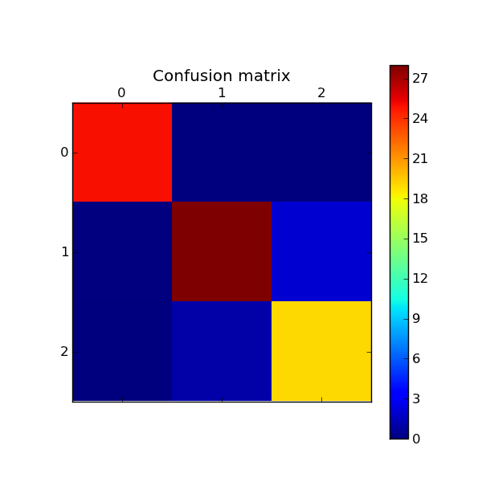

Confusion matrix¶
Example of confusion matrix usage to evaluate the quality of the output of a classifier.
Script output:
[[25 0 0]
[ 0 28 2]
[ 0 1 19]]
Python source code: plot_confusion_matrix.py
print __doc__
import random
import pylab as pl
from sklearn import svm, datasets
from sklearn.metrics import confusion_matrix
# import some data to play with
iris = datasets.load_iris()
X = iris.data
y = iris.target
n_samples, n_features = X.shape
p = range(n_samples)
random.seed(0)
random.shuffle(p)
X, y = X[p], y[p]
half = int(n_samples / 2)
# Run classifier
classifier = svm.SVC(kernel='linear')
y_ = classifier.fit(X[:half], y[:half]).predict(X[half:])
# Compute confusion matrix
cm = confusion_matrix(y[half:], y_)
print cm
# Show confusion matrix
pl.matshow(cm)
pl.title('Confusion matrix')
pl.colorbar()
pl.show()